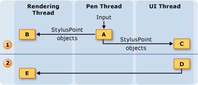
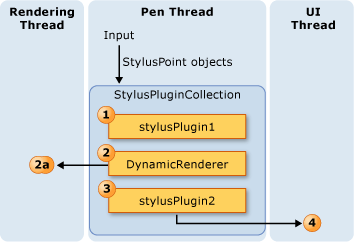
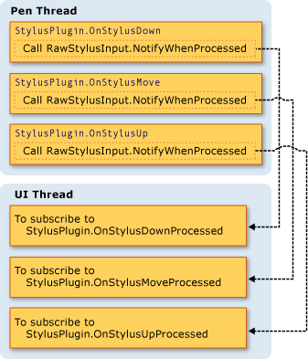
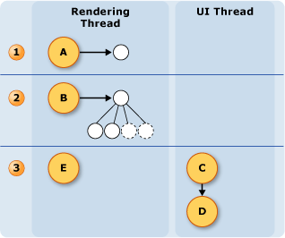

Потоковая модель рукописного ввода
Одним из преимуществ рукописного ввода на планшетном ПК является, что его сходство с записи с помощью регулярного пера и бумаги. В этой ситуации планшетное перо получать входные данные гораздо быстрее мыши и отображает рукописные данные как записи пользователя. Поток пользовательского интерфейса (UI) приложения недостаточно для сбора данных пера и отрисовка рукописных данных, так как он может быть заблокирован. Чтобы устранить эту проблему, WPF приложение использует два дополнительных потока, когда пользователь осуществляет рукописный ввод.
Ниже перечислены потоки, примите участие в сборе и отображении рукописный ввод.
Поток пера - поток, который принимает ввод от пера. (На самом деле это пул потоков, но в этом разделе он называется пуле потоков пера.)
Поток пользовательского интерфейса приложения - поток, который определяет пользовательский интерфейс приложения.
Поток динамической отрисовки - поток, который отображает рукописные данные при пользователь рисует штрих. Поток динамической отрисовки отличается от потока, отображающего другие элементы пользовательского интерфейса для приложения, как упоминалось в Windows Presentation Foundation потоковая модель.
Модель рукописного ввода совпадает ли приложение использует InkCanvas или пользовательский элемент управления, аналогичный показанному на Создание элемента управления рукописным ввода. Несмотря на то, что в этом разделе обсуждается создание потоков на основе InkCanvas, те же принципы применяются при создании пользовательского элемента управления.
Работа с потоками Обзор
На следующей схеме показана модель потоков, когда пользователь рисует штрих:

Действия, происходящие во время пользователь рисует штрих
Когда пользователь рисует штрих, точки пера поставляются потоке пера. Подключаемые модули пера, включая DynamicRendererпримите точки пера в потоке пера и иметь возможность изменить их перед InkCanvas их получает.
DynamicRenderer Отображает точки пера в поток динамической отрисовки. Это происходит в то же время на предыдущем шаге.
InkCanvas Получает точки пера в потоке пользовательского интерфейса.
Действия, происходящие после пользователь завершает штрих
Когда пользователь заканчивает рисование штриха, InkCanvas создает Stroke и добавляет его к InkPresenter, который статически его отображает.
Поток пользовательского интерфейса оповещает DynamicRenderer , статически выполняется отрисовка росчерка пера, поэтому DynamicRenderer удаляет его визуальное представление штриха.
Сбор рукописных фрагментов и подключаемых модулей пера
Каждый UIElement имеет StylusPlugInCollection. StylusPlugIn Объекты в StylusPlugInCollection получать и изменять точки пера в потоке пера. StylusPlugIn Объекты получают точки пера, в соответствии с их порядок в StylusPlugInCollection.
На следующей схеме показана гипотетическую ситуацию где StylusPlugIns коллекцию UIElement содержит stylusPlugin1, DynamicRenderer, и stylusPlugin2в этом порядке.

На предыдущей диаграмме происходит следующее поведение:
StylusPlugin1изменения значений x и y.DynamicRenderer Получает измененные точки пера и отображает их в поток динамической отрисовки.
StylusPlugin2Получает измененные точки пера и дальнейшие изменения значений x и y.Приложение собирает точки пера и, когда пользователь заканчивает штриха, статически отображает штрих.
Предположим, что stylusPlugin1 ограничивает точки пера в прямоугольник и stylusPlugin2 переносит точки пера вправо. В приведенном выше сценарии DynamicRenderer принимает ограниченные, но не перенесенные точки пера. Когда пользователь рисует штрих, выполняется отрисовка росчерка пера в границах прямоугольника, но он не доступен для перевода, пока пользователь отрывает перо.
Выполнение операций с помощью пера, подключаемый модуль, в потоке пользовательского интерфейса
Так как точные попадания не может выполняться в потоке пера, некоторые элементы могут иногда получать пера, предназначенный для других элементов. Если требуется, чтобы убедиться в том, правильно направлен входных данных перед выполнением операции, подписаться на и выполнить операцию в OnStylusDownProcessed, OnStylusMoveProcessed, или OnStylusUpProcessed метод. Эти методы вызываются потоком приложения после точной проверки нажатия. Чтобы подписаться на эти методы, вызов NotifyWhenProcessed метод в методе, который генерируется в потоке пера.
На следующей схеме показана связь между потоком пера и поток пользовательского интерфейса по отношению к событиям пера StylusPlugIn.

Отрисовка рукописных данных
Когда пользователь рисует штрих, DynamicRenderer отображает рукописные данные в отдельном потоке, поэтому данные для «поток» от пера даже в том случае, если поток пользовательского интерфейса занят. DynamicRenderer Строит визуальное дерево на поток динамической отрисовки, так как он собирает точки пера. Когда пользователь заканчивает штриха, DynamicRenderer запрашивает получать уведомления, когда приложение выполняет следующего прохода отрисовки. После следующего прохода отрисовки, завершения работы приложения DynamicRenderer очищает его визуального дерева. Следующая диаграмма иллюстрирует этот процесс.

Пользователь начинает штриха.
- DynamicRenderer Создает визуальное дерево.
Пользователь рисует штрих.
- DynamicRenderer Строит визуальное дерево.
Пользователь завершает штриха.
InkPresenter Добавляет штрих в визуальном дереве.
Уровень интеграции мультимедиа (MIL) статически отображает штрихи.
DynamicRenderer Очищает визуальные элементы.